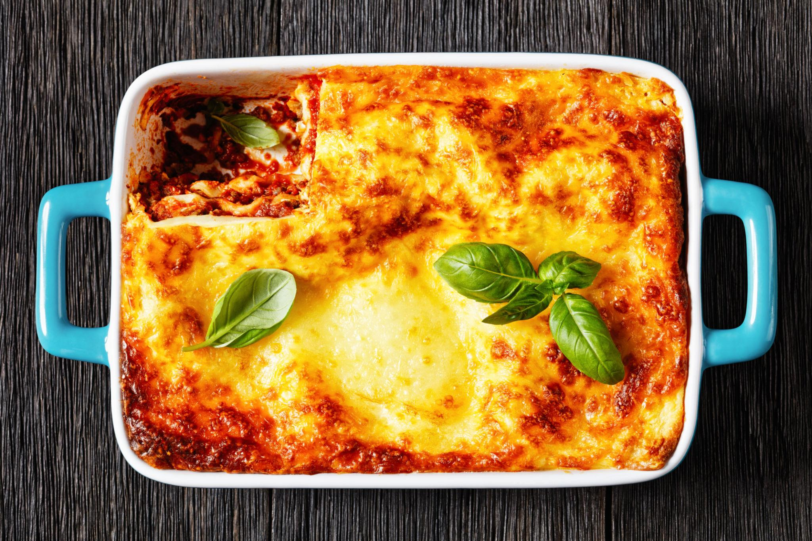

Lasagna

Description
Lasagna is a classic Italian-inspired dish made with
layers of pasta, meat sauce, and cheese. It is baked
until the cheese is melted and golden brown.
Ingredients
- 12 lasagna noodles
- 1 pound ground beef
- 24 ounces marinara sauce
- 15 ounces ricotta cheese
- 2 cups shredded mozzarella cheese
- 1/2 cup grated Parmesan cheese
- 1 egg
- 1 teaspoon Italian seasoning
- Salt and pepper to taste
Steps
- Preheat the oven to 375°F (190°C).
- Cook the lasagna noodles according to the package instructions. Drain and set aside.
- Brown the ground beef in a skillet over medium heat until fully cooked. Drain excess grease.
- Add the marinara sauce to the beef and simmer for 5 minutes.
- In a separate bowl, mix the ricotta cheese, egg, Italian seasoning, salt, and pepper.
- Spread a thin layer of meat sauce in a baking dish.
- Add a layer of noodles, ricotta mixture, meat sauce, and mozzarella cheese. Repeat the layers.
- Finish with the remaining mozzarella and Parmesan cheese.
- Bake for 35 to 45 minutes, until the cheese is golden, the sauce is bubbling, and the center reaches 165°F (74°C).
- Let the lasagna rest for 10 to 15 minutes before slicing and serving.
Home